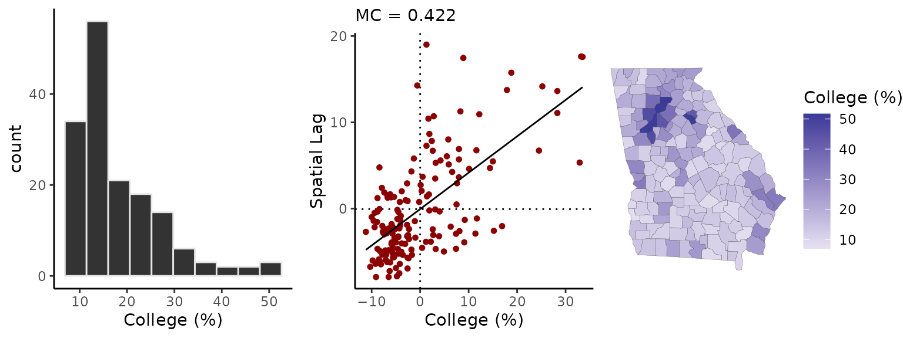

Measuring and visualizaing spatial autocorrelation
Connor Donegan
September 13, 2021
Source:vignettes/measuring-sa.Rmd
measuring-sa.RmdThis vignette walks through exploratory spatial analysis functionality in the geostan package, which includes methods for measuring and visualizing spatial autocorrelation.
Getting started
From the R console, load the geostan, sf, and tidyverse packages.
This vignette uses the georgia data set from the geostan package. This is a simple features (sf) object with estimates of county population characteristics from the American Community Survey (ACS) for the five year period spanning 2014-2018. Their corresponding standard errors are also here. The column college contains ACS estimates for the percent of the population age 25 and older that has obtained a college degree or higher; the standard errors of the survey estimates are in the column named college.se.
Spatial diagnostic summary
If we pass these estimates and the simple features object to sp_diag function, it returns a histogram, Moran scatter plot, and map of the estimates:
sp_diag(georgia$college, georgia, name = "College (%)")
The Moran plot is a visualization of the degree of spatial autocorrelation (SA): on the horizontal axis are the college estimates while the vertical axis represents the mean neighboring value. The Moran coefficient, an index of SA, is printed at the top (MC=0.42) (Chun and Griffith 2013).
The map shows that the contrast between the greater Atlanta metropolitan area and the rural counties is a prominent, if not the predominant, spatial pattern. It may help to compare the mean of the variable (which is just 18%):
mean(georgia$college)
#> [1] 18.1956with a population-weighted mean (30%):
weighted.mean(georgia$college, w = georgia$population)
#> [1] 30.66856Understanding the Moran scatter plot
We can create the Moran plot ourselves using the moran_plot function and a spatial connectivity matrix. The shape2mat function takes a spatial object (simple features or spatial polygons) and creates a sparse matrix representation of the neighborhood structure: counties are considered ‘neighbors’ if their borders touch each other.1 To reproduce the Moran plot given by sp_diag, we need to provide a row-standardized spatial weights matrix. We do this be setting the second argument, style, to “W”.
C <- shape2mat(georgia, style = "W")
moran_plot(georgia$college, C)
For the sake of transparency and instruction, we can also create a Moran scatter plot manually. Again, the spatial lag term, \(\tilde{x}\), is the average of surrounding values: \(\tilde{x} = \sum_j^n c_{ij} x_j\). This is equal to the matrix-vector product, \(C x\), which we calculate in R using %*%, for matrix multiplication:
x <- georgia$college - mean(georgia$college)
spatial_lag <- as.numeric(C %*% x)
ggplot() +
geom_point(aes(x, spatial_lag),
col = "darkred") +
geom_hline(yintercept = 0, lty = 2) +
geom_vline(xintercept = 0, lty = 2) +
geom_smooth(
aes(x, spatial_lag),
se = FALSE,
col = "black",
method = "lm",
) +
theme_classic()
#> `geom_smooth()` using formula 'y ~ x' Similarly, we can calculate the Moran coefficient using
Similarly, we can calculate the Moran coefficient using mc:
mc(georgia$college, C)
#> [1] 0.422Under particular conditions (the variable has been centered by subtracting its own mean from each value, and a row-standardized weights matrix is used), the Moran coefficient is equivalent to the slope of the regression line on the Moran plot:
lm(spatial_lag ~ x)
#>
#> Call:
#> lm(formula = spatial_lag ~ x)
#>
#> Coefficients:
#> (Intercept) x
#> -0.05638 0.42161If we use a binary spatial weights matrix, the vertical axis will show the sum of surrounding values:
moran_plot(georgia$college, shape2mat(georgia, "B")) While positive and negative neighboring values still cancel out as previously, using a binary matrix means that counties with more neighbors contribute more to the MC. This makes sense—a county with eight neighbors that have similar values as itself should contribute more to a measure of autocorrelation than a county neighbored by just two or three similar values.
While positive and negative neighboring values still cancel out as previously, using a binary matrix means that counties with more neighbors contribute more to the MC. This makes sense—a county with eight neighbors that have similar values as itself should contribute more to a measure of autocorrelation than a county neighbored by just two or three similar values.
The quadrants of the Moran plot are helpful for classifying observations. The first (top right) quadrant represents counties with above-average values that are also surrounded by above-average values; the third (bottom left) quadrant contains low values surrounded by low values. Points in these quadrants contribute positively to the MC, and they represent positive spatial autocorrelation. The second (top left) and fourth quadrants represent negative spatial autocorrelation since they contain spatial outliers—high (or low) values surrounded by dissimilar values.
Local Indicators of Spatial Association
The lisa function calculates “local indicators of spatial association” (Anselin 1995). LISA values are closely related to the Moran plot. If instead of centering college, we had converted it to z-scores by both centering and dividing by the standard deviation of college, the LISA value would be equal to the product of the z-scores and their spatial lag, \(L_i = z_i * \tilde{z}_i\). The lisa function returns the LISA values and indicates which quadrant of the Moran plot the point is found:
Li <- lisa(georgia$college, C)
head(Li)
#> Li type
#> 1 0.17326473 LL
#> 2 0.06529153 LL
#> 3 -0.10145498 LH
#> 4 4.26126631 HH
#> 5 -0.40938420 HL
#> 6 4.60294163 HH“HH” indicates a high value surrounded by high values; “LL” is a low surrounded by low values, and so on. LISA’s can be particularly helpful for identifying observations that don’t conform to the expectation of positive spatial autocorrelation, which is embedded in many models. Its worth nothing that each of the LISA values (also known as local Moran’s I) contribute to the Moran coefficient:
Effective sample size
We have examined spatial patterns in the data using an abstract index of SA (the Moran coefficient), LISAs, and by qualitative, visual analysis of the map. We can also consider what these spatial patterns mean in terms of the information content of our data; that is, the impact that spatial autocorrelation might have on the amount ‘evidence’ that can be garnered from this data in an analysis. We might talk of this as “effective sample size” (ESS). Intuitively, evidence tends to increase with the variety of conditions under which a phenomena has been observed; so the amount of variation in data is related to the amount of information it contains.
The n_eff function provides an approximate measure of ESS for spatially autocorrelated data. Based on the simultaneous autoregressive (SAR) model (Griffith 2005), it requires a value of the SA parameter, \(\rho\), from the SAR model and the number of observations in our data set. We can get a rough measure of ESS for our ICE data using the following code:
rho <- aple(georgia$ICE, C)
n <- nrow(georgia)
ess <- n_eff(rho = rho, n = n)
c(nominal_n = n, rho = rho, ESS = ess)
#> nominal_n rho ESS
#> 159.00000 0.71800 21.69292This tells us that, given the degree of SA in the ICE estimates, our nominal sample size of 159 observations has about the same information content as 22 independent observations. This should provide some idea as to why it is so perilous to use conventional (non-spatial) statistical methods with spatial data. The odds of observing a strong correlation between any arbitrary pair of spatially patterned variables can be far greater than conventional methods report. Returning to our qualitative assessment of the map patterns, it should be clear enough that any variable showing a general metropolitan-rural pattern is liable to appear correlated with the ICE.
References
Anselin, Luc. 1995. “Local Indicators of Spatial Association—Lisa.” Georgaphical Analysis 27 (2): 93–115.
Chun, Yongwan, and Daniel A Griffith. 2013. Spatial Statistics and Geostatistics: Theory and Applications for Geographic Information Science and Technology. Sage.
Griffith, Daniel A. 2005. “Effective Geographic Sample Size in the Presence of Spatial Autocorrelation.” Annals of the Association of American Geographers 95 (4): 740–60.
For the most part, users do not need to know anything about sparse matrix objects to work with them. Objects from the Matrix package can typically be treated like objects of class “matrix”. Sometimes, however, you may need to make an explicit call the the Matrix package to access its methods. For example,
colSums(C)will produce an error, butMatrix::colSums(C)will work as expected.↩